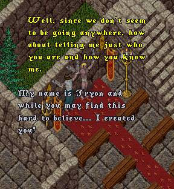
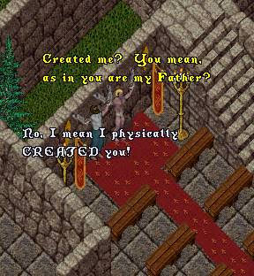
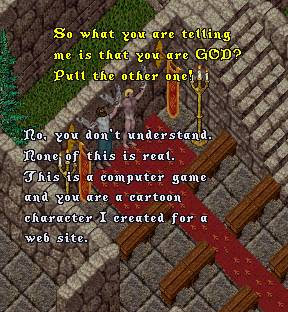
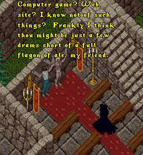
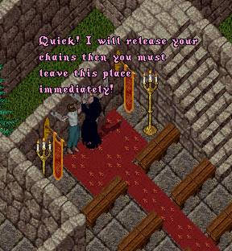
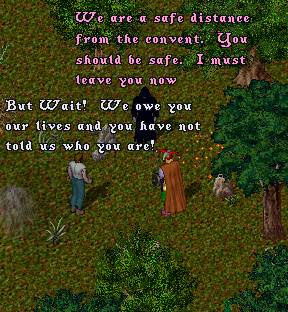
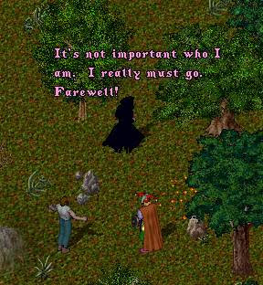
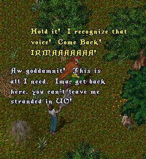

Episode 107: We're not in Kansas anymore, Toto! (Part 5) - OK, so last week Tryon finally met up with his creation ImaNewbie, but in doing so was captured by the Sisterhood and now finds himself chained, side-by-side with his alter-ego. As this episode opens Tryon decides it is time to explain his relationship to ImaNewbie.




Tryon tries desperately to get ImaNewbie to
understand the concept of his being a comic
character and not a real being, when all of a
sudden a dark-robed figure appears out of
nowhere and begins to free them of their
shackles.



The mysterious robed figure runs
off, but suddenly ImaNewbie
is struck with a revelation!
He recognizes the voice ...
It can only be one person! ...
